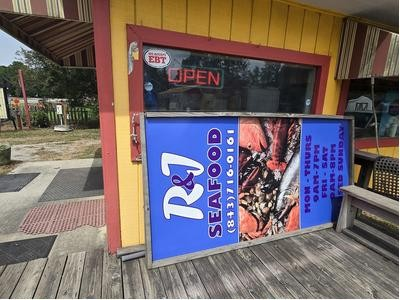
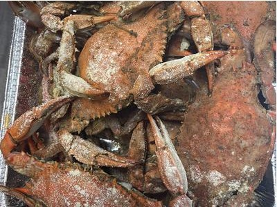

Fresh seafood in Loris
R&JSeafood
Seafood (market / prepared food) · 1620 US-701 Hwy, Loris, SC 29569
4.7★Google rating
120Google reviews



Loris · South CarolinaFresh seafood
Why locals come back
Fresh seafood in Loris.
Seafood (market / prepared food) at 1620 US-701 Hwy, Loris, SC 29569.
About us4.7★
from 120 Google reviews · Restaurantji rating: 4.8
In their words
Hours
| Monday | Closed / not listed |
| Tuesday | Closed / not listed |
| Wednesday | 9 AM – 7 PM |
| Thursday | 9 AM – 7 PM |
| Friday | 9 AM – 5 PM |
| Saturday | Closed / not listed |
| Sunday | Closed / not listed |